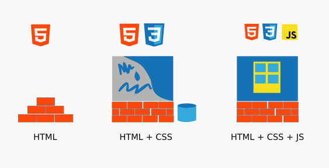
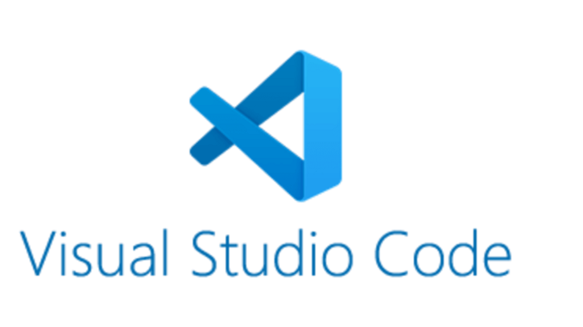
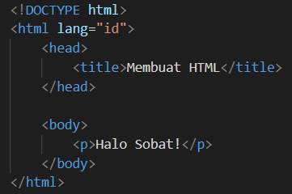
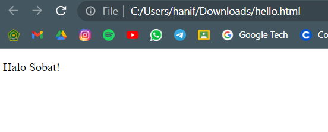

Assignment 3 Home
Selamat Datang !
Selamat Datang di situs Cenip. Di situs ini Cenip akan mendemonstrasikan prinsip dan teknik dari HTML5, manipulasi DOM, daftar / list, tabel, audio, video, teks, dan teknik lainnya yang dapat digunakan di HTML5
Pengenalan Pada Situs
Di dalam situs ini terdapat 8 pages yang berbeda yakni: Home Page, List Page, Table Page, Image Page, Audio Page, Video Page, DOM Page, dan Honesty Page. Di setiap page tentunya memiliki fungsi dan kegunaan yang berbeda-beda.
Pengenalan Pada HTML5
Situs ini dibuat menggunakan bahasa markup hypertext / HTML5 yang digunakan untuk menyusun dan menyajikan konten di World Wide Web (WWW). HTML menjadi bahasa yang wajib dipelajari bagi seseorang yang ingin menjadi Web Developer. Jadi, HTML adalah sebuah bahasa yang menggunakan markup atau penanda untuk dapat membuat sebuah halaman web. Penanda ini biasa disebut dengan istilah Tag. HTML berperan dalam menentukan struktur konten dan tampilan dari sebuah web.
Peralatan untuk Belajar HTML5
Adapun peralatn yang perlu dipersiapkan untuk dapat mempelajari HTML adalah
sebagai berikut :
1. Teks Editor
Dalam menulis kode HTML kita memerlukan teks editor. Terdapat banyak sekali teks editor yang dapat digunakan untuk menulis kode HTML. Dalam hal ini cenip menggunakan teks editor bernama Visual Studio Code.  VSC memiliki banyak fitur yang dapat membantu kita dalam menulis kode-kode HTML. Selain itu VSC juga dapat digunakan untuk menulis kode-kode lain di bahasa pemrograman yang berbeda seperti Java, JavaScript, Python, C++, dan lainnya.2. Web Browser
 Web browser digunakan sebagai penampil dari dokumen HTML. Kita dapat menggunakan
browser apapun asalkan browser tersebut memiliki versi terbaru. Dalam hal ini Cenip
menggunakan browser Google Chrome.
Web browser digunakan sebagai penampil dari dokumen HTML. Kita dapat menggunakan
browser apapun asalkan browser tersebut memiliki versi terbaru. Dalam hal ini Cenip
menggunakan browser Google Chrome.
Membuat Dokumen HTML
Langkah pertama dalam membuat dokumen HTML adalah dengan membuka teks editor. Setelah
teks editor terbuka kita dapat langsung memasukkan kode berikut :

Setelah itu kita dapat menyimpannya dengan nama hello.html. Setelah disimpan, cobalah
untuk membuka filenya maka akan muncul tampilan seperti berikut :

Selamat!, kini kamu telah berhasil membuat satu website yang simpel. Sangat mudah bukan?.